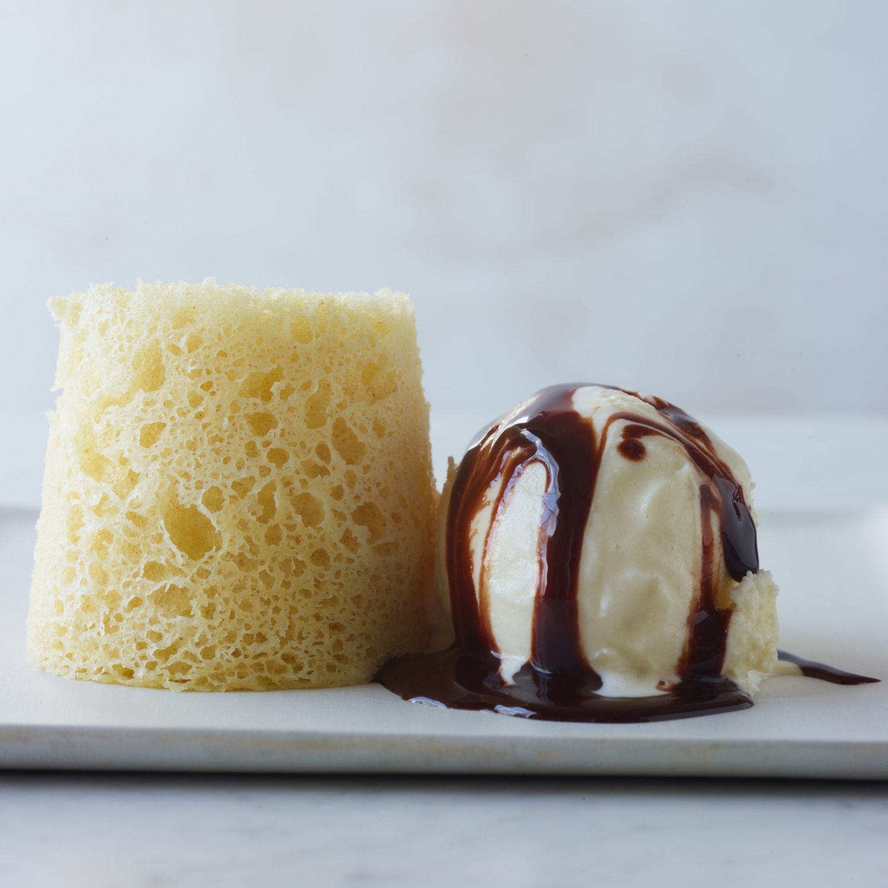

Chef Mike's Famous Corn Cake

Description
A quick cake recipe that can be altered for many flavours.
Ingredients
- 190g whole eggs
- 20g egg yolks
- 80g white sugar
- 1.5 salt
- 75g corn juice
- 40g melted butter
- 30g flour
Process
- In bowl whisk together all eggs, then whisk in remaining ingredients until blended and smooth.
- Pass through fine mesh.
- Transfer batter to canister of whipped cream charger. Charge with 2 NO carts, shake hard.
- Invert canister and shoot into 250ml plastic cup. Immedietly place in microwave and heat at 90% power for 40 seconds.
- Turn cup upside down and tap to dislodge cake. Repeat with remaining batter